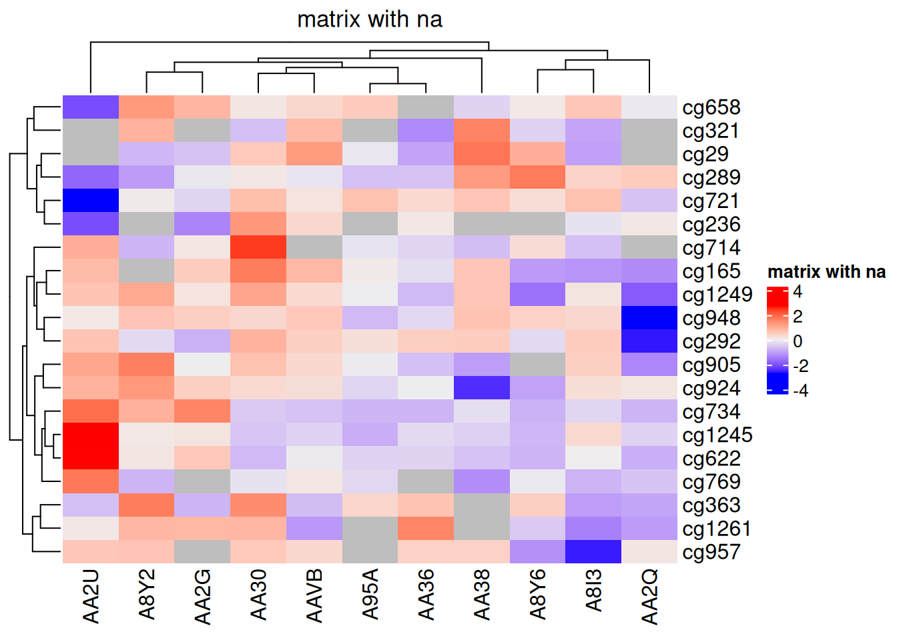
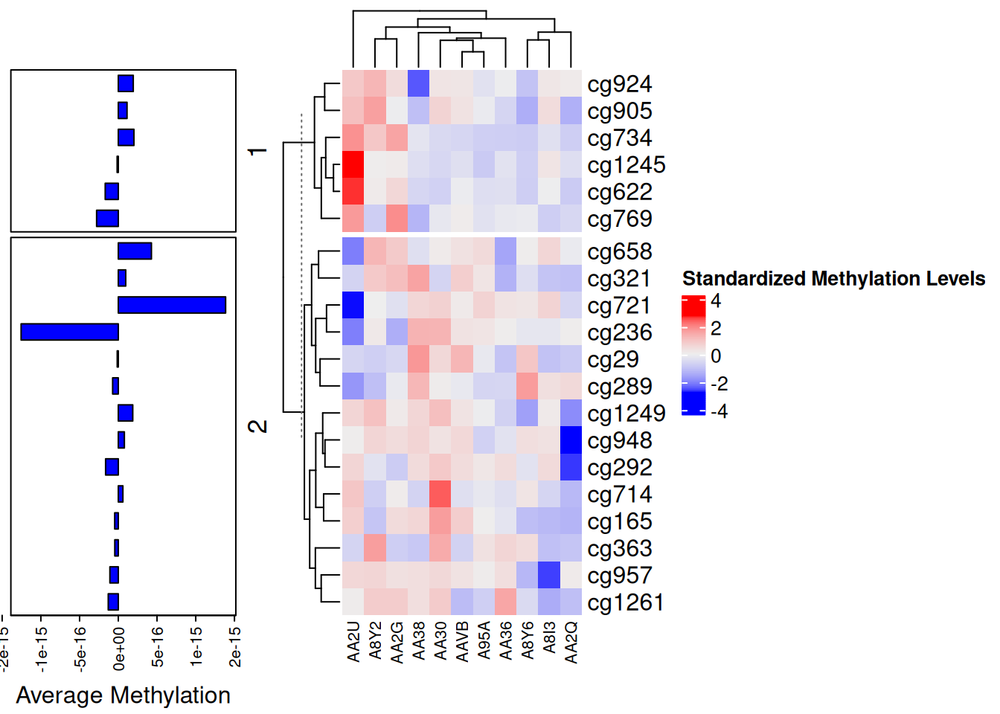

# Installing necessary packages
if (!requireNamespace("readr", quietly = TRUE)) {
install.packages("readr")
}
if (!requireNamespace("tidyverse", quietly = TRUE)) {
install.packages("tidyverse")
}
if (!requireNamespace("ggplot2", quietly = TRUE)) {
install.packages("ggplot2")
}
if (!requireNamespace("hrbrthemes", quietly = TRUE)) {
install.packages("hrbrthemes")
}
if (!requireNamespace("dplyr", quietly = TRUE)) {
install.packages("dplyr")
}
if (!requireNamespace("tidyr", quietly = TRUE)) {
install.packages("tidyr")
}
if (!requireNamespace("viridis", quietly = TRUE)) {
install.packages("viridis")
}
if (!requireNamespace("tibble", quietly = TRUE)) {
install.packages("tibble")
}
if (!requireNamespace("htmlwidgets", quietly = TRUE)) {
install.packages("htmlwidgets")
}
if (!requireNamespace("RColorBrewer", quietly = TRUE)) {
install.packages("RColorBrewer")
}
if (!requireNamespace("plotly", quietly = TRUE)) {
install.packages("plotly")
}
if (!requireNamespace("devtools", quietly = TRUE)) {
install.packages("devtools")
}
if (!requireNamespace("d3heatmap", quietly = TRUE)) {
devtools::install_github("talgalili/d3heatmap")
}
if (!requireNamespace("heatmaply", quietly = TRUE)) {
install.packages("heatmaply")
}
if (!requireNamespace("lattice", quietly = TRUE)) {
install.packages("lattice")
}
if (!requireNamespace("ComplexHeatmap", quietly = TRUE)) {
devtools::install_github("jokergoo/ComplexHeatmap")
}
if (!requireNamespace("pheatmap", quietly = TRUE)) {
install.packages("pheatmap")
}
if (!requireNamespace("circlize", quietly = TRUE)) {
install.packages("circlize")
}
if (!requireNamespace("gridExtra", quietly = TRUE)) {
install.packages("gridExtra")
}
if (!requireNamespace("cowplot", quietly = TRUE)) {
install.packages("cowplot")
}
# Loading the libraries
library(readr)
library(hrbrthemes) # Additional themes for ggplot2
library(dplyr) # Data manipulation functions
library(tidyr) # Data tidying functions
library(viridis) # Color palettes for better visualization
library(tibble) # Tidy data frames
library(htmlwidgets) # Interactive web visualizations
library(RColorBrewer) # Color palettes for visualizations
library(plotly) # Interactive plots
library(d3heatmap) # D3.js-based interactive heatmaps
library(heatmaply) # Interactive heatmaps with ggplot2
library(lattice) # Trellis graphics for multivariate data
library(ComplexHeatmap) # Advanced heatmap functionalities
library(pheatmap) # Pretty heatmaps with clustering support
library(circlize) # Circular visualizations
library(gridExtra) # Grid layout visualization
library(cowplot)
library(tidyverse)
library(ggplot2) # Data visualization packageHeatmap
A heatmap is a powerful visualization tool that represents matrix values through color gradients. It is widely used to illustrate gene expression differences across sample groups, variations in compound concentrations, and pairwise sample similarities. More broadly, any tabular dataset can be structured into a heatmap to enhance interpretability.
Example

In this heatmap, rows correspond to car models (e.g., Mazda RX4, Merc 450SLC), while columns represent specific attributes (e.g., mpg for miles per gallon, hp for horsepower, wt for weight). Each cell encodes the attribute value for a given car, with higher values appearing closer to yellow.
Hierarchical clustering (dendrograms) on the top and left depict similarity relationships among rows and columns, facilitating pattern recognition and comparative analysis.
Note
Notes: The heatmap in this example provides limited insight due to the disparity in attribute scales. Attributes such as hp (horsepower) and disp (displacement) exhibit substantially higher values than others, distorting the color mapping and overshadowing lower-range features. To enhance interpretability, data normalization is required, as discussed in the following sections.
Setup
System Requirements: Cross-platform (Linux/MacOS/Windows)
Programming Language: R
Dependencies:
readr,ggplot2,hrbrthemes,dplyr,tidyr,viridis,tibble,htmlwidgets,RColorBrewer,plotly,devtools,d3heatmap,heatmaply,lattice,ComplexHeatmap,pheatmap,circlize,gridExtra,cowplot
Data Preparation
This section provides a brief tutorial using built-in R datasets (mtcars, volcano) and the TCGA-CHOL.methylation450.tsv dataset from UCSC Xena DATASETS. These datasets will be used to demonstrate heatmap visualization in R. This example demonstrates how to load and work with these datasets in R.
# load built-in R datasets `mtcars`
data("mtcars", package = "datasets")
mtcars_matrix <- as.matrix(mtcars)
# Load and process methylation data
raw_methylation_data <- readr::read_tsv("https://bizard-1301043367.cos.ap-guangzhou.myqcloud.com/TCGA-CHOL.methylation450.tsv")
# Convert to matrix and clean up row/column names
methylation_matrix <- raw_methylation_data[, -1] %>%
as.data.frame() %>%
`rownames<-`(raw_methylation_data$Composite)
# Tidy to long format
methylation_long <- methylation_matrix %>%
rownames_to_column("Composite") %>%
pivot_longer(cols = -Composite, names_to = "Sample", values_to = "Methylation_Level") %>%
mutate(
Methylation_Level = as.numeric(Methylation_Level),
Composite = gsub("^cg0+", "cg", Composite),
Sample = substr(Sample, 9, 12)
)
# Standardize methylation values
methylation_long_standardized <- methylation_long %>%
group_by(Composite) %>%
mutate(Standardized_Level = scale(Methylation_Level)[,1]) %>%
ungroup()
# Convert back to wide format matrix
standardized_methylation_matrix <- methylation_long_standardized %>%
select(Composite, Sample, Standardized_Level) %>%
pivot_wider(names_from = Sample, values_from = Standardized_Level) %>%
column_to_rownames("Composite") %>%
as.matrix()
# Clean up raw methylation matrix (numerical version for raw heatmap)
methylation_matrix_num <- methylation_matrix %>%
mutate(across(everything(), ~ as.numeric(as.character(.)))) %>%
`rownames<-`(gsub("^cg0+", "cg", rownames(.))) %>%
{ `colnames<-`(., substr(colnames(.), 9, 12)) } %>%
as.matrix()Visualization
1. Basic R Heatmaps
1.1 Basic Heatmap
Using the heatmap() function to construct a heatmap. Below is the simplest heatmap created in base R without additional parameters. The heatmap() function requires a matrix as input. If the data is in a data frame, it can be converted into a matrix using the as.matrix() function. A matrix can also be transposed using the t() function, which swaps rows and columns, effectively exchanging the X and Y axes.
heatmap(mtcars_matrix)
This heatmap uses color variations to display numerical differences between performance variables of various cars in the mtcars dataset.
Tip
This heatmap is not particularly insightful because the variables hp and disp with relatively high values dominate the scale. Consequently, variations in other variables (e.g., mpg, wt) are hard to discern. Standardizing the data, as discussed in the next section, is necessary.
1.2 Standardization
The scale parameter in the heatmap() function can be used to standardize the matrix. It can be applied to rows or columns. Here, columns are chosen since we aim to capture variations between columns.
heatmap(mtcars_matrix, scale="column")
This heatmap presents standardized values of performance variables in the mtcars dataset, making comparisons across variables on a common scale and improving the visual accuracy and interpretability.
1.3 Clustering Dendrograms and Reordering
In the generated heatmap, the order of rows and columns differs from the original mtcars matrix because heatmap() applies clustering algorithms to reorder variables and observations. It calculates distances between pairs of rows and columns and sorts them based on similarities.
Additionally, dendrograms are displayed alongside the heatmap. These can be disabled using the Rowv and Colv parameters, as shown below.
heatmap(mtcars_matrix, Colv = NA, Rowv = NA, scale="column")
This heatmap shows the standardized values of performance variables in the mtcars dataset, with the dendrograms removed to maintain the original order of rows and columns.
1.4 Color Palettes
Heatmaps can utilize different color palettes:
- Built-in R palettes:
terrain.colors(),rainbow(),heat.colors(),topo.colors(),cm.colors() - Palettes suggested by the RColorBrewer package
- Custom color palettes
# Native color palette
heatmap(mtcars_matrix, scale="column", col = cm.colors(256))
heatmap(mtcars_matrix, scale="column", col = terrain.colors(256))
# Using Rcolorbrewer
coul <- colorRampPalette(brewer.pal(8, "PiYG"))(25)
heatmap(mtcars_matrix, scale="column", col = coul)
# Custom color palette
my_palette <- colorRampPalette(c("blue", "white", "red"))(256)
heatmap(mtcars_matrix, scale = "column", col = my_palette)


The following four heatmaps demonstrate the same data using different color palettes. These highlight the differences in performance variables of cars in the mtcars dataset, emphasizing how palette selection can influence visual interpretation and clarity.
RColorBrewer
The display.brewer.all() function in the RColorBrewer package showcases all available color schemes.
par(plt=c(0.1,1,0,1))
display.brewer.all()
The image displays color scheme names on the left and their respective colors on the right. These schemes fall into three categories: - Sequential (seq): Gradual variations of a single color, suitable for continuous or ordered categorical variables. - Qualitative (qual): Highly distinct colors without hierarchical relationships, ideal for unordered categorical variables. - Diverging (div): Two colors transitioning in opposite directions, often used for continuous variables with meaningful midpoint values (e.g., temperature or odds ratios).
1.5 Customizing Layout
Heatmaps can be customized using standard parameters like main for the title and xlab/ylab for axis labels. Additionally, labRow/colRow allow changes to labels, while cexRow/cexCol adjust their sizes.
# Custom titles and axis titles
p5 <- heatmap(mtcars_matrix, Colv = NA, Rowv = NA, scale="column", col = coul, xlab="variable", main="heatmap")
# Custom labels
p6 <- par(mar = c(5, 0, 4, 2)) # Adjust margins
heatmap(mtcars_matrix, scale="column", cexRow=.8, labRow=paste("new_", rownames(mtcars_matrix),sep=""), col= colorRampPalette(brewer.pal(8, "Blues"))(25))

The following two heatmaps illustrate standardized performance variables in the mtcars dataset with customized titles, axis labels, and row annotations, improving visual clarity and data communication.
1.6 Heatmaps with Color Annotations
Heatmaps are often used to compare observed structures against expected ones. TheRowSideColors parameter can add a color vector to the side of a heatmap to indicate expected groupings.
my_group <- as.numeric(as.factor(substr(rownames(mtcars_matrix), 1 , 1))) # Group row labels by the first letter and convert to numeric
colSide <- brewer.pal(9, "Set1")[my_group] # Use the Set1 color scheme from RColorBrewer to generate 9 colors, assigning each group a color
colMain <- colorRampPalette(brewer.pal(8, "Blues"))(25)
heatmap(mtcars_matrix, Colv = NA, Rowv = NA, scale="column" , RowSideColors=colSide, col=colMain)
The heatmap below groups rows by their first letters and assigns a distinct color to each group, helping observers quickly identify differences between groups and understand data patterns more intuitively.
2. ggplot2 Heatmaps
The ggplot2 package uses the geom_tile() function to create heatmaps. Unlike heatmap(), it doesn’t natively support standardization, clustering, or dendrograms.
2.1 Basic Heatmap
A basic heatmap created with ggplot2 and geom_tile(). Standardization must be performed beforehand, as geom_tile() cannot directly standardize data.
The input data must be in a long-format data frame, where each row represents one observation with three key variables:
x: Position on the X-axisy: Position on the Y-axisfill: Numerical values mapped to colors
p <- ggplot(methylation_long_standardized, aes(x = Sample, y = Composite, fill= Standardized_Level)) +
geom_tile()
p This heatmap demonstrates the distribution of standardized methylation levels (Standardized_Level) in the TCGA-CHOL dataset across samples (Sample) and composites (Composite), highlighting differences in methylation patterns.
2.2 Color Palettes
Heatmaps can have their color palettes customized, just like any ggplot2 chart. Below are three examples using different approaches:
scale_fill_gradient(): Sets the extreme colors of the palette.scale_fill_distiller()): UsesColorBrewerpalettes.scale_fill_viridis()Implements theViridispalette. Remember to setdiscrete=FALSEfor continuous variables (ensuring smooth color gradients).
# Extreme colors
p7 <- ggplot(methylation_long_standardized, aes(x = Sample, y = Composite, fill= Standardized_Level)) +
geom_tile()+
scale_fill_gradient(low="white", high="blue") +
theme_ipsum() +
theme(axis.text.x = element_text(size = 10))
# ColorBrewer color palette
p8 <- ggplot(methylation_long_standardized, aes(x = Sample, y = Composite, fill= Standardized_Level)) +
geom_tile() +
scale_fill_distiller(palette = "RdPu") +
theme_ipsum() +
theme(axis.text.x = element_text(size = 10))
# Using Viridis
p9 <- ggplot(methylation_long_standardized, aes(x = Sample, y = Composite, fill= Standardized_Level)) +
geom_tile()+
scale_fill_viridis(discrete=FALSE) +
theme_ipsum() +
theme(axis.text.x = element_text(size = 10))
plot_grid(p7, p8, p9, ncol = 1)These three heatmaps showcase identical data from the TCGA-CHOL dataset, illustrating the distribution of standardized methylation levels between various samples and composites. They emphasize the importance of palette choice for visual impact and data interpretation.
2.3 Handling Wide-Format Data
A common issue involves input in a wide matrix format, such as the volcano dataset. In such cases, the gather() function from the tidyr package can transform the data into a long format suitable for visualization with ggplot.
volcano %>%
as_tibble() %>%
rowid_to_column(var="X") %>%
gather(key="Y", value="Z", -1) %>%
mutate(Y=as.numeric(gsub("V","",Y))) %>%
ggplot(aes(X, Y, fill= Z)) +
geom_tile() +
theme_ipsum() +
theme(legend.position="none")This heatmap represents the elevation values (Z) in the volcano dataset. The x-axis indicates row indices (X), the y-axis represents column indices (Y), and color fill depicts changes in elevation.
2.4 Interactive Heatmaps
One of the significant advantages of creating heatmaps with ggplot2 is the ability to make them interactive using the plotly package. Simply wrap the plot in an object and pass it to the ggplotly() function.
You can also customize tooltips to provide richer information. Try hovering over a cell to view tooltips or zoom in on specific areas.
# Create tooltips text
methylation_long_annotated <- methylation_long_standardized %>%
mutate(text = paste0("Composite: ",Composite, "\n", "Sample: ", Sample, "\n", "Standardized_Level: ", Standardized_Level))
p <- ggplot(methylation_long_annotated, aes(Composite, Sample, fill = Standardized_Level, text = text)) +
geom_tile() +
theme_ipsum()
pp <- ggplotly(p, tooltip="text", width = 1200, height = 700)
ppThis interactive heatmap, built with the plotly package, allows dynamic exploration and in-depth data analysis, offering a more intuitive understanding and information retrieval process.
Alternative packages like d3heatmap and heatmaply can also create interactive heatmaps.
Using the d3heatmap Package
d3heatmap(standardized_methylation_matrix, scale = "row", dendrogram = "none")The d3heatmap package creates interactive heatmaps, enabling dynamic exploration and deeper insights into data.
Using the heatmaply Package
p <- heatmaply(standardized_methylation_matrix,
dendrogram = "none",
xlab = "", ylab = "",
main = "",
scale = "row",
margins = c(50,0,30,30),
grid_color = "white",
grid_width = 0.00001,
titleX = FALSE,
hide_colorbar = TRUE,
branches_lwd = 0.1,
fontsize_row = 5, fontsize_col = 5,
labCol = colnames(standardized_methylation_matrix),
labRow = rownames(standardized_methylation_matrix),
heatmap_layers = theme(axis.line = element_blank())
)
pSimilarly, the heatmaply package generates interactive heatmaps, allowing for dynamic analysis and enhanced comprehension of the data.
3. lattice Heatmaps
The lattice package provides the levelplot() function for constructing heatmaps.
3.1 Basic Usage of levelplot()
# Convert the Sample and Composite columns from characters to factors
methylation_long_standardized$Sample <- as.factor(methylation_long_standardized$Sample)
methylation_long_standardized$Composite <- as.factor(methylation_long_standardized$Composite)
levelplot(Standardized_Level ~ Sample * Composite, data = methylation_long_standardized,
xlab = "Sample", ylab = "Composite",
main = "Heatmap of Standardized TCGA-CHOL Methylation Levels")
This heatmap illustrates the distribution of standardized methylation levels between samples and composites in the TCGA-CHOL dataset, highlighting variations in methylation states across different samples.
3.2 Wide-Format Matrix Input
Unlike the earlier example with long-format data, this approach uses a square matrix.
Tip
Rows and columns are flipped in the heatmap.
levelplot(standardized_methylation_matrix)
This heatmap demonstrates variations in methylation states across TCGA-CHOL samples using a wide-format matrix in levelplot().
3.3 Flipping Axes
R’s t() function transposes the input matrix, flipping the x and y coordinates. This makes the heatmap’s structure align precisely with the input matrix.
Setting aspect = "fill" adjusts the aspect ratio automatically to reflect the matrix’s actual proportions.
# Flip X and Y axes
levelplot( t(standardized_methylation_matrix),
col.regions=heat.colors(220),
aspect = "fill") # Automatically adjust aspect ratio
This heatmap reflects the same data as the original matrix with flipped coordinates for structural alignment.
3.4 Color Palettes
Multiple palette options are available: - Native R palettes: terrain.color()， rainbow()，heat.colors()， topo.colors()，cm.colors() - RColorBrewerpalettes - Viridispalettes: viridis, magma, inferno, plasma
# Native color palette
p10 <- levelplot(volcano, col.regions = terrain.colors(100)) # try cm.colors() or terrain.colors()
p10
# Using Rcolorbrewer
coul <- colorRampPalette(brewer.pal(8, "PiYG"))(25)
p11 <- levelplot(volcano, col.regions = coul)
p11
# Using Viridis
coul <- viridis(100)
p12 <- levelplot(volcano, col.regions = coul)
p12


Using the volcano dataset, these heatmaps visualize elevation values and emphasize the impact of palette selection on interpretability.。
4. pheatmap Heatmaps
The pheatmap package also builds heatmaps and supports data standardization.
4.1 Basic Heatmap
pheatmap(methylation_matrix_num, scale = "row")This heatmap visualizes differences in methylation patterns across samples in the TCGA-CHOL dataset using the pheatmap package.
4.2 Adjusting Dendrograms
clustering_distance_rowsandclustering_distance_colsrepresent the distance measures used for row and column clustering. The default is “euclidean”, but it can also be set to “correlation”, meaning clustering will be performed based on the Pearson correlation method.clustering_methodallows modification of the clustering method, which can be one of the following: ‘ward’, ‘ward.D’, ‘ward.D2’, ‘single’, ‘complete’, ‘average’, ‘mcquitty’, ‘median’, or ‘centroid’.
pheatmap(methylation_matrix_num, scale = "row",
clustering_distance_rows = "euclidean", clustering_distance_cols = "euclidean", # Distance measure used for clustering
clustering_method = "complete", # Clustering method
cluster_rows = T, cluster_cols = F, # Whether to display clustering trees
treeheight_row = 30, treeheight_col = 30) # Adjust clustering tree heightsThis heatmap uses the pheatmap package to display the differences in methylation status across different samples in the TCGA-CHOL dataset, with clustering between samples turned off. The samples are arranged in their original order.
4.3 Angle Adjustment of Labels and Segmentation Position Without Clustering
pheatmap(methylation_matrix_num, scale = "row",
clustering_distance_rows = "euclidean", clustering_distance_cols = "euclidean", # Distance measure used for clustering
clustering_method = "complete", # Clustering method
cluster_rows = T, cluster_cols = F, # Whether to display clustering trees
treeheight_row = 30, treeheight_col = 30, # Adjust clustering tree heights
angle_col = "45", # Change column label angle
gaps_col = c(3,6)) # Used only when column clustering is not performed, assuming samples are split into three groups at positions 3 and 6Adjusting the label angles in this heatmap can prevent overlapping labels and improve readability. Adjusting the segmentation position under non-clustered conditions can highlight differences between specific samples, facilitating intuitive analysis.
4.4 Adding Values or Markers
pheatmap(methylation_matrix_num, scale = "row",
border_color = "white", # Change cell border color
display_numbers = TRUE, # Display corresponding values in heatmap cells
fontsize_number = 9,
number_color = "grey30",
number_format = "%.1f") # Keep one decimal placeAdding values or markers to the heatmap provides additional context, helping observers quickly identify the specific methylation level of each sample or site, thereby enhancing the intuitiveness and accuracy of data interpretation.
Using Raw Data for Annotation
pheatmap(methylation_matrix_num, scale = "row",
border_color = "white",
display_numbers = matrix(ifelse(methylation_matrix_num > .8 | methylation_matrix_num < -.8, "*", ""), nrow = nrow(methylation_matrix_num)),
fontsize_number = 9,
number_color = "grey30")This heatmap uses unnormalized data for annotation, making the results incomparable and potentially misleading observers regarding the differences between samples. Unnormalized values may obscure actual relative changes due to absolute value differences between samples, reducing the accuracy of data interpretation.
Using Normalized Data
pheatmap(standardized_methylation_matrix, scale = "none", # No need for further standardization
border_color = "white",
display_numbers = matrix(ifelse(standardized_methylation_matrix > 1 | standardized_methylation_matrix < -1, "*", ""), nrow = nrow(standardized_methylation_matrix)),
fontsize_number = 9,
number_color = "grey30") Marking the heatmap with normalized data can intuitively highlight significant values or features, making it easier for observers to recognize notable methylation state changes or outliers, thus providing guidance for subsequent analysis. This approach enhances the readability and interpretability of the data, helping users quickly extract key information.
4.5 Color Palettes
The heatmap generated by the pheatmap package allows for various ways to modify the color palette: - Native R palettes:terrain.color()， rainbow()，heat.colors()， topo.colors()，cm.colors() - Custom palettes - RColorBrewer palettes
# Native color palette
p13 <- pheatmap(standardized_methylation_matrix, scale = "none",
border_color = "white",
color = colorRampPalette(c("navy","white","firebrick3"))(100))
# Custom color palette
p14 <- pheatmap(standardized_methylation_matrix, scale = "none",
border_color = "white",
color = cm.colors(100))
# Using Rcolorbrewer
coul <- colorRampPalette(brewer.pal(8, "PiYG"))(25)
p15 <- pheatmap(standardized_methylation_matrix, scale = "none",
border_color = "white",
color = coul)These three heatmaps use different color palettes to showcase the differences in methylation states among samples in the TCGA-CHOL dataset, emphasizing the importance of palette choice for visual effects and data interpretation.
5. complexheatmap Heatmaps
The ComplexHeatmap package, based on the grid package, uses an object-oriented approach to implement heatmaps and their components. It mainly includes the following classes:
Heatmap：Draws a single heatmap (note the capitalization).HeatmapList：Draws a list of heatmaps.HeatmapAnnotation: Defines row and column annotations for the heatmap, which can either be part of the heatmap or independent of it.
Additionally, there are some internal classes:
SingleAnnotation：: Defines a single row or column annotation, forming the list elements ofHeatmapAnnotation.ColorMapping: Defines the mapping of values to colors.AnnotationFunction: Used to customize annotation graphics.
5.1 Basic Heatmap
Heatmap(standardized_methylation_matrix)
This heatmap uses the ComplexHeatmap package to display the differences in methylation status across different samples in the TCGA-CHOL dataset.
5.2 Color Palettes
Usually, the matrices we plot consist of continuous data, so the color mapping function needs to take a vector as input and return a vector as output.
The author of this package recommends using the colorRamp2() function from another package, circlize, to set up color mapping. The colorRamp2() function takes two parameters: the first sets the breakpoint values for mapping, and the second specifies the corresponding color values.
In the example below, values between -2 and 2 are linearly interpolated to obtain corresponding colors, with values greater than 2 mapped to red and values less than -2 mapped to green.
col_fun <- colorRamp2(c(-2, 0, 2), c("green", "white", "red"))
Heatmap(standardized_methylation_matrix, name = "Standardized_Level", col = col_fun)
This heatmap uses colorRamp2() to set up color mapping, showcasing the differences in methylation states among samples in the TCGA-CHOL dataset.
Additionally, using colorRamp2() ensures color comparability across multiple heatmaps. For example, in two heatmaps, the same color always corresponds to the same value:
p1 <- Heatmap(standardized_methylation_matrix, name = "Standardized_Level1", col = col_fun)
p2 <- Heatmap(standardized_methylation_matrix/2, name = "Standardized_Level2", col = col_fun)
p1 + p2 
This heatmap uses colorRamp2() to enable color comparisons on the same scale, showcasing the differences in methylation states among samples in the TCGA-CHOL dataset.
If the matrix is continuous, you can simply provide a color vector, and the colors will be linearly interpolated. However, this method is not robust to outliers, as color mapping is determined by the minimum and maximum values in the matrix. Extreme outliers can cause less noticeable color variations within the normal range.
Heatmap(standardized_methylation_matrix, name = "Standardized_Level", col = rev(cm.colors(10)), column_title = "color vector for continuous matrix")
This heatmap demonstrates color mapping through linear interpolation, showing the differences in methylation states among samples in the TCGA-CHOL dataset.
You can also visualize NA values using the na_col parameter to specify the color for NA:
standardized_methylation_matrix_na <- standardized_methylation_matrix
na_index <- sample(c(TRUE, FALSE), nrow(standardized_methylation_matrix)*ncol(standardized_methylation_matrix), replace = TRUE, prob = c(1, 9))
standardized_methylation_matrix_na[na_index] <- NA
Heatmap(standardized_methylation_matrix_na, name = "matrix with na", na_col = "grey", column_title = "matrix with na")

na_col Parameter complexheatmap
This heatmap uses the na_col parameter to set the color of NA values to gray, showcasing the differences in methylation states among samples in the TCGA-CHOL dataset.
By default, linear interpolation of colors follows the LAB color space. Other color spaces, such as RGB, XYZ, and sRGB, are also available.
f1 <- colorRamp2(seq(min(standardized_methylation_matrix), max(standardized_methylation_matrix), length = 3), c("blue", "#EEEEEE", "red"))
f2 <- colorRamp2(seq(min(standardized_methylation_matrix), max(standardized_methylation_matrix), length = 3), c("blue", "#EEEEEE", "red"), space = "RGB")
p1 <- Heatmap(standardized_methylation_matrix, name = "Standardized_Level1", col = f1, column_title = "color space in LAB")
p2 <- Heatmap(standardized_methylation_matrix, name = "Standardized_Level2", col = f2, column_title = "color space in RGB")
p1 + p2
This heatmap illustrates the differences in methylation states among samples in the TCGA-CHOL dataset across various color spaces.
5.3 Borders and Gridlines
The outermost border of the heatmap is set using the border parameter, while gridlines are configured with the rect_gp parameter.
The border parameter can be a logical or a color value. The rect_gp parameter requires a grid::gpar object.
Heatmap(standardized_methylation_matrix, name = "Standardized_Level", border = "black", col = col_fun, rect_gp = gpar(col = "white", lwd = 2) )
This heatmap modifies the borders and gridlines to show the differences in methylation states among samples in the TCGA-CHOL dataset.
5.4 Clustering
Adjusting the cluster_rows and cluster_columns parameters modifies the clustering of the heatmap.
p1 <- Heatmap(standardized_methylation_matrix, cluster_rows = F, cluster_columns = F)
p1
This heatmap disables clustering, highlighting the differences in methylation states among samples in the TCGA-CHOL dataset.
5.5 Annotation Bars and Multiple Heatmaps
Annotation bars are an important component of heatmaps. The ComplexHeatmap package provides flexible settings for annotation bars, which can be placed on any of the four sides of the heatmap (top, bottom, left, or right) using top_annotation, bottom_annotation, left_annotation, and right_annotation. All annotation bars are created using the HeatmapAnnotation() function (alternatively, the rowAnnotation() function can be used as a variant by specifying HeatmapAnnotation(..., which = "row")).
p1 <- rowAnnotation(
"Average Methylation" = anno_barplot(
rowMeans(standardized_methylation_matrix),
gp = gpar(fill = "blue"),
width = unit(4, "cm"),
axis_param = list(at = pretty(rowMeans(standardized_methylation_matrix)),
labels = format(pretty(rowMeans(standardized_methylation_matrix)), nsmall = 1, digits = 1))
)
)
p2 <- Heatmap(standardized_methylation_matrix,
name = "Standardized Methylation Levels",
col = f2,
row_km = 2,
column_names_gp = gpar(fontsize = 8)) # Based on row clustering
p1 + p2

This bar chart serves as an annotation bar for the heatmap, displaying the average methylation value for each site.
One of the standout features of the ComplexHeatmap package is its ability to plot multiple heatmaps simultaneously. The example below shows horizontally arranged heatmaps; vertically arranged heatmaps follow a similar principle. Horizontally aligned heatmaps require the same rows.
The combination of the heatmap and bar chart displays differences in methylation states among samples in the TCGA-CHOL dataset and the average methylation value for each site.
Applications
1. Basic Heatmap

Figure 2: Heatmaps of TEC matching from 52 healthy individuals. (a) Raw heatmap. (b) Binary heatmap. [1]
2. Heatmaps with Color Annotations

Figure 6: Grouping by labels. All heatmap functions support row and column annotations, but implementations vary. Heatmap (a) and heatmap.2 (b) functions support displaying only a single color bar. Heatmap.plus (c) supports displaying a matrix of colored bars. Heatmap_plus (d) can display data frames for binary variables. Although heatmap.2 and heatmap.plus can generate rectangular images, heatmap and heatmap_plus output square images. [2]
3. Comparative Heatmaps

Figure 6: Comparative heatmaps for miniARS experiments to resolve ambiguities in partitioning and replication functions associated with miniARS chromosomal fragments. Fragments depleted in the Cen-miniARS or Acen-miniARS experiments (e.g., miniARS317 fragments) compared to fragments enriched in these experiments. (B) Shared fragments in the miniARS datasets located in the given competition fitness deciles (i.e., fragments present in both Acen-miniARS and Cen-miniARS libraries) are represented in this heatmap. The heatmap is divided into 100 sections, each representing a combination of competition fitness deciles in the Acen-miniARS and Cen-miniARS experiments, as shown: Bottom-left: Fragments with low competition fitness in both Acen- and Cen-miniARS, indicating weak replication and partitioning abilities. (Partitioning “−”; Replication “−”). Contains 288 fragments representing 62 origins. Bottom-right: Fragments with high competition fitness in Acen-miniARS but low in Cen-miniARS, indicating strong partitioning but weak replication abilities (Partitioning “+”; Replication “−”). Contains 103 fragments representing 32 origins. Top-left: Fragments with low competition fitness in Acen-miniARS but high in Cen-miniARS, indicating weak partitioning but strong replication abilities (Partitioning “−”; Replication “+”). Contains 105 fragments representing 33 origins. (C) Combination analysis of the fragments from (B), aiming to define regions critical for maximizing partitioning abilities (1st and 4th pairs of heatmaps) versus replication abilities (2nd and 3rd pairs of heatmaps). (D) Similar to (B), but heatmaps include only miniARS fragments indicating ARS regions.
Abbreviations: ARS: Autonomous Replicating Sequence, FKH: Forkhead, ORC: Origin Recognition Complex, RAP1: Rap1 protein binding site [3]
Reference
- Yang, M., Liu, B., Zhao, M., Li, F., Wang, G., & Zhou, F. (2013). Normalizing electrocardiograms of both healthy persons and cardiovascular disease patients for biometric authentication. PLoS One, 8(8), e71523. https://doi.org/10.1371/journal.pone.0071523
- Key, M. (2012). A tutorial in displaying mass spectrometry-based proteomic data using heat maps. BMC Bioinformatics, 13(Suppl 16), S10. https://doi.org/10.1186/1471-2105-13-S16-S10
- Hoggard, T., Liachko, I., Burt, C., Meikle, T., Jiang, K., Craciun, G., Dunham, M. J., & Fox, C. A. (2016). High throughput analyses of budding yeast ARSs reveal new DNA elements capable of conferring centromere-independent plasmid propagation. G3 (Bethesda), 6(4), 993–1012. https://doi.org/10.1534/g3.116.027904
- Wickham, H. (2016). ggplot2: Elegant graphics for data analysis. Springer. https://r-graph-gallery.com/ggplot2-package.html
- Rudis, B. (2020). hrbrthemes: Additional themes and theme components for ‘ggplot2’. https://cran.r-project.org/package=hrbrthemes
- Wickham, H., François, R., Henry, L., & Müller, K. (2021). dplyr: A grammar of data manipulation. https://cran.r-project.org/package=dplyr
- Wickham, H., & Henry, L. (2021). tidyr: Tidy messy data. https://cran.r-project.org/package=tidyr
- Garnier, S. (2018). viridis: Default color maps from ‘matplotlib’. https://cran.r-project.org/package=viridis
- Henry, L. (2022). tibble: Simple data frames. https://cran.r-project.org/package=tibble
- Urbanek, S. (2021). htmlwidgets: HTML widgets for R. https://cran.r-project.org/package=htmlwidgets
- Neuwirth, E. (2014). RColorBrewer: ColorBrewer palettes. https://cran.r-project.org/package=RColorBrewer
- Winston, L., & Hsu, T. (2021). plotly: Create interactive web graphics via ‘plotly.js’. https://cran.r-project.org/package=plotly
- D3heatmap: Interactive heatmaps using ‘d3.js’. https://cran.r-project.org/package=d3heatmap
- Gang, C. (2020). heatmaply: Interactive heat maps for R. https://cran.r-project.org/package=heatmaply
- Becker, R. A., Wilks, A. R., & Brownrigg, R. (2021). lattice: The lattice package for R. https://cran.r-project.org/package=lattice
- Auguie, B. (2017). gridExtra: Miscellaneous Functions for “Grid” Graphics. https://cran.r-project.org/package=gridExtra